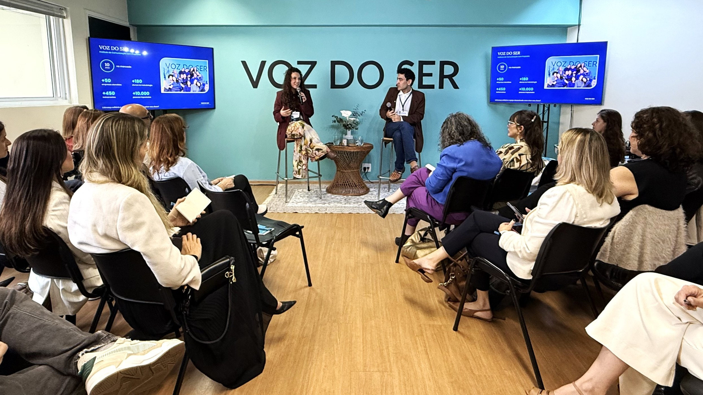
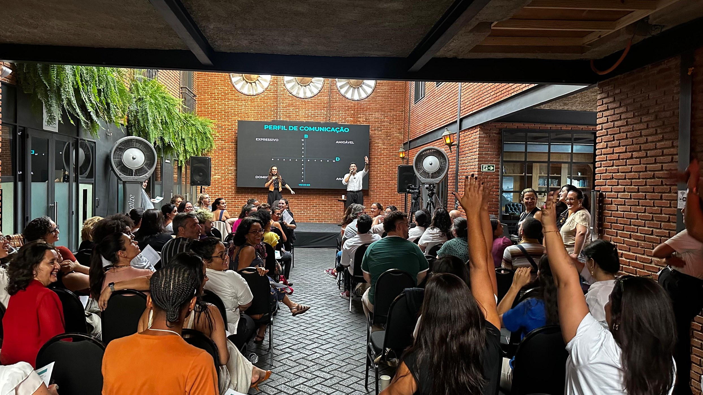
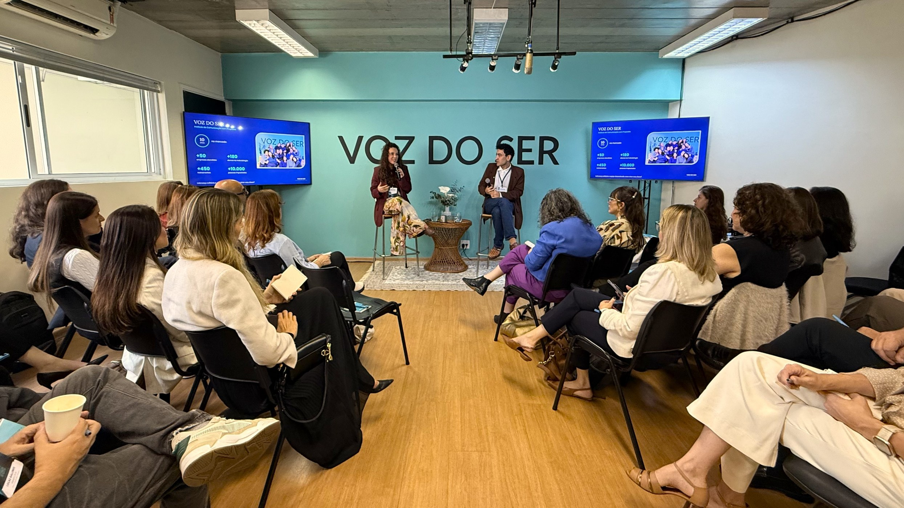
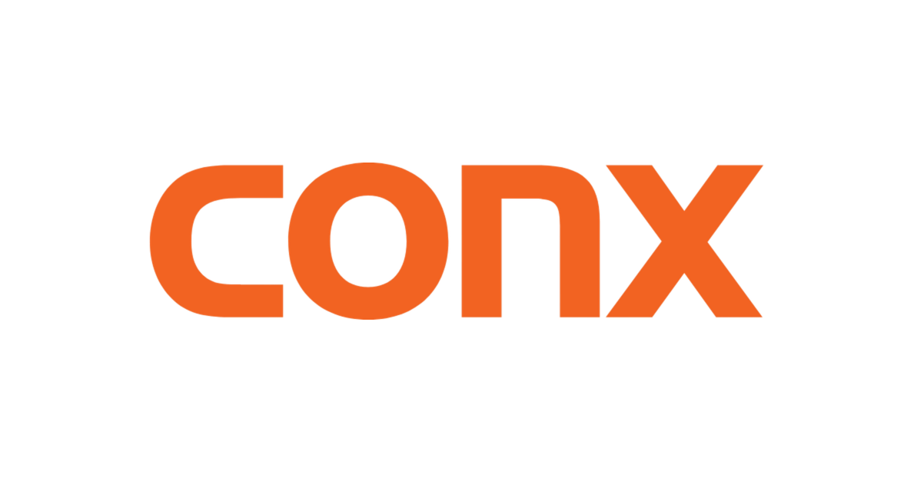

Proposta · GMP Properties S/A07.10.2026

Comunicação, saúde mental, relacionamentos e inteligência relacional.
Role para verO Programa Liderança com Propósito, desenhado para as lideranças da GMP Properties, tem o objetivo de desenvolver habilidades essenciais para uma liderança que valoriza comunicação, saúde mental, relacionamentos, inteligência emocional e inteligência relacional.
Com uma abordagem prática e aplicada aos desafios reais da liderança, o programa promove autoconhecimento, fortalece a comunicação e amplia a capacidade de engajar, desenvolver e se relacionar com diferentes perfis de pessoas.
Para que o programa possa se adequar ao momento, às necessidades e à profundidade de desenvolvimento desejada, estruturamos três estratégias de implementação: P, M e G. Cada uma propõe um nível diferente de aprofundamento e acompanhamento, permitindo escolher o formato que melhor responde aos desafios atuais e aos objetivos com as lideranças.


Experiência imersiva de 4 horas · 15 líderes
Uma experiência imersiva de 4 horas, desenvolvida para os 15 líderes, unindo conteúdo, prática, reflexão e simulações de situações reais de liderança.
O workshop poderá ser realizado in company ou no Espaço Voz do Ser, em uma experiência especialmente preparada para receber as lideranças, com estrutura completa, coffee break, intervenções musicais e toda a estrutura híbrida necessária para integrar também os participantes à distância.
Combina um olhar individual para as principais lideranças com uma experiência coletiva de desenvolvimento, criando uma base comum de comunicação, relacionamento e liderança com propósito.
Uma com cada líder de líderes, utilizando como base a metodologia da Terapia da Comunicação. Os encontros serão espaços de escuta, avaliação e desenvolvimento individual.
Conteúdo, prática, reflexão e simulações de situações reais de liderança, com os sete eixos descritos acima.

Combina uma experiência imersiva inicial com um processo de desenvolvimento contínuo ao longo de um ano.
Conteúdo, prática, reflexão e simulações de situações reais de liderança. In company ou no Espaço Voz do Ser, com estrutura completa, coffee break, intervenções musicais e estrutura híbrida.
Cada encontro é dedicado a uma temática importante, com uma dupla de Terapeutas da Comunicação especializados, combinando uma parte expositiva e prática com um espaço de mentoria coletiva, no qual os líderes trazem dúvidas, desafios e situações reais do dia a dia.
Workshop inicial em outubro, seguido de encontros online em dezembro, fevereiro, abril, junho, agosto e outubro, completando um ciclo de aproximadamente 12 meses.

Integra desenvolvimento individual, experiência coletiva e acompanhamento contínuo ao longo de um ano: o olhar particular sobre cada liderança e, ao mesmo tempo, uma linguagem comum para todo o grupo.
Com base na Terapia da Comunicação, em espaços de escuta, avaliação e desenvolvimento individual, conforme detalhado na Proposta P.
A experiência imersiva descrita acima, in company ou no Espaço Voz do Ser.
Conduzidos por uma dupla de Terapeutas da Comunicação, com as seis temáticas listadas na Proposta M.
Mentorias individuais, workshop inicial em outubro e encontros online em dezembro, fevereiro, abril, junho, agosto e outubro, completando um ciclo de aproximadamente 12 meses.
Cada estratégia tem duas opções, conforme o workshop aconteça in company ou no Espaço Voz do Ser. Os valores já consideram o desconto aplicado ao conjunto.
O treinamento no Espaço Voz do Ser inclui café da manhã, música ao vivo e estrutura híbrida.

O Voz do Ser é um Instituto de Comunicação com Propósito, autoconhecimento e mudança de mentalidade. Atuamos nas áreas clínica, organizacional e educacional, oferecendo terapias, cursos e treinamentos em comunicação, inteligência emocional e desenvolvimento pessoal.
Nossa abordagem une ciência, prática e espiritualidade, para promover transformação de relacionamentos e expansão consciencial.



Estamos à disposição para detalhar a estratégia que fizer mais sentido para a GMP Properties e alinhar as datas.